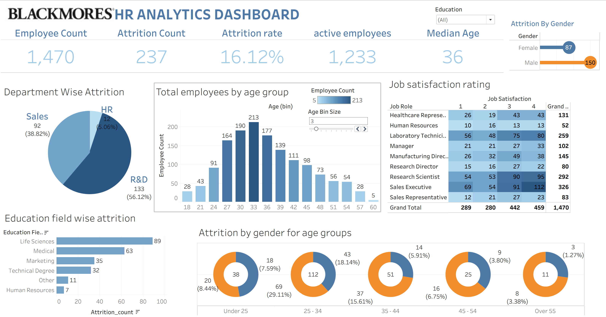

A Tableau dashboard analysing employee attrition across 1,470 employees — surfacing which departments, education fields, and age groups see the most turnover, and how job satisfaction relates to who stays and who leaves.

KPI cards for employee count, attrition count, attrition rate, active employees, and median age, alongside department-wise attrition, an age distribution histogram with adjustable bin size, a job satisfaction heatmap by role, education field-wise attrition, and gender-split attrition by age bracket — all filterable by education level.
Designed and built an interactive Tableau dashboard analysing HR data across 1,470 employees to understand attrition patterns — which departments and education fields see the most turnover, how attrition varies by gender and age group, and how job satisfaction relates to who stays and who leaves.
Seven individual worksheets were built around specific attrition questions, then combined into a single dashboard with Tableau calculated fields for attrition rate, active employee count, and custom age binning, plus a global Education filter for slicing every view.
Attrition data existed as raw employee records with no way to quickly see which departments, roles, or demographics were driving turnover.
Without a breakdown by age, gender, and education field, it was hard to tell which employee segments were most at risk of leaving.
Job satisfaction scores weren't connected to job role, making it difficult to spot which teams needed the most attention.
Cleaned and enriched raw employee records ahead of import, deriving upstream fields for age band and attrition labelling.
Built calculated fields inside the workbook for attrition count, attrition rate, active employees, and a custom age bin (bin size 3).
Built seven individual worksheets, each answering a specific attrition question — by department, education field, gender, age group, and job satisfaction.
Combined all views into a single branded dashboard with a global Education filter to slice every visual by education level.
R&D accounts for 56.12% of employees (133) and Sales for 38.82% (92), with HR a small remainder — attrition initiatives should focus where the workforce actually sits.
This age group accounts for 112 total attritions — split 69 female and 43 male — far ahead of every other bracket.
The largest single age bin is 33, with 213 employees — the workforce is concentrated in the late-20s to mid-30s range.
Employees from a Life Sciences background account for the most attrition by education field (89), ahead of Medical (63) and Marketing (35).
Focus retention programs on the 25–34 age bracket, which drives the largest share of attrition by a wide margin.
Since these two departments hold the vast majority of headcount, even small satisfaction gains here have outsized impact on overall attrition.
Use the job satisfaction heatmap to flag roles skewing toward low scores and prioritise manager check-ins there.
Life Sciences and Medical backgrounds show the highest attrition by education field — worth understanding whether career-path expectations are being met.
Male attrition (150) outpaces female attrition (87) overall — worth tracking whether this holds across departments and roles.
Layering in years-at-company and promotion history would help distinguish early-tenure flight risk from longer-term disengagement.